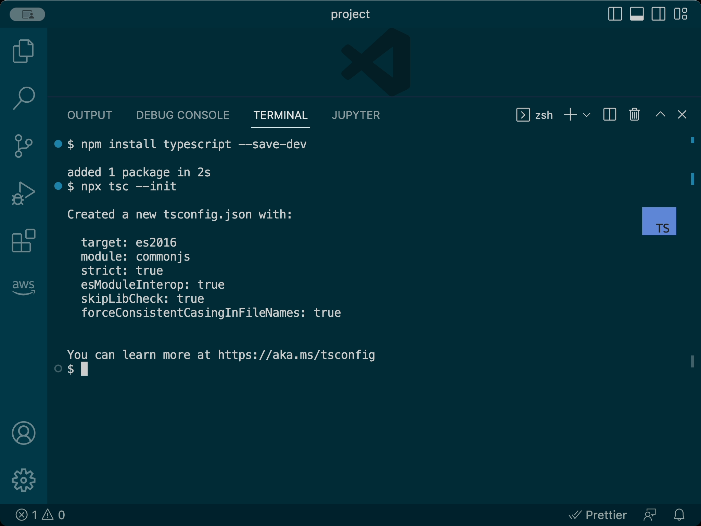
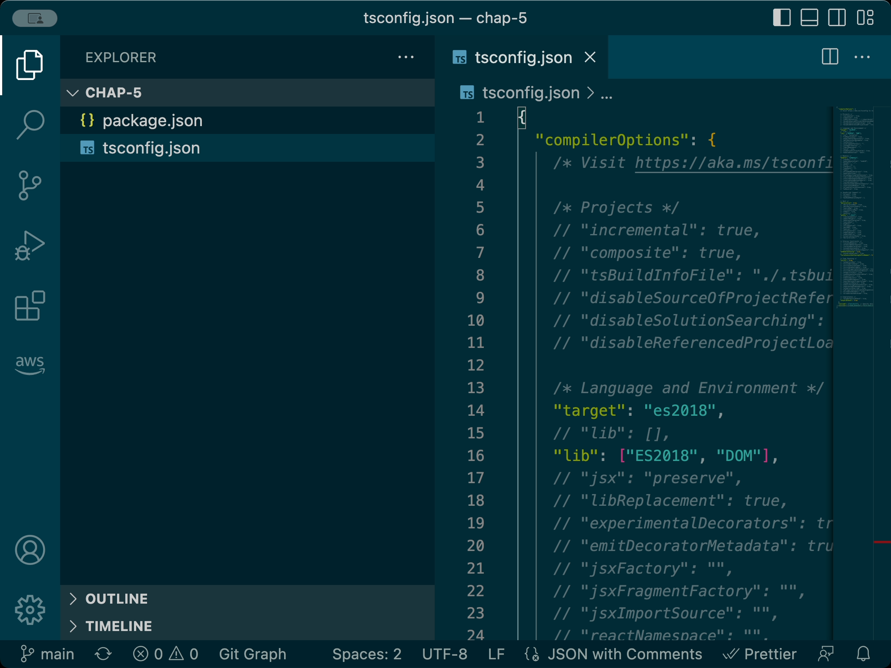
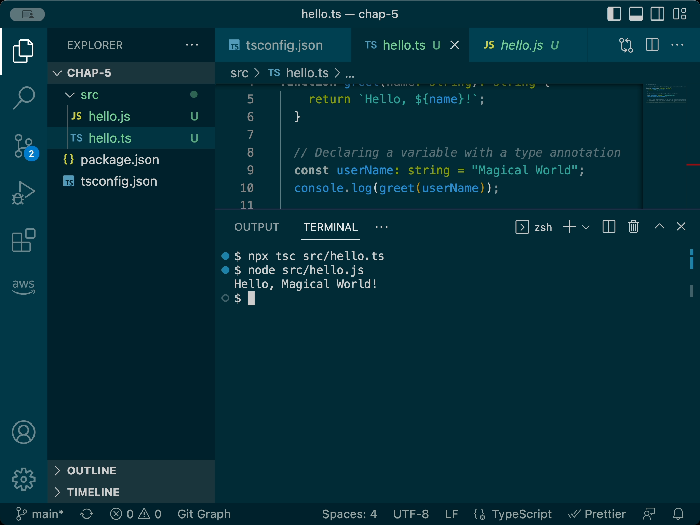
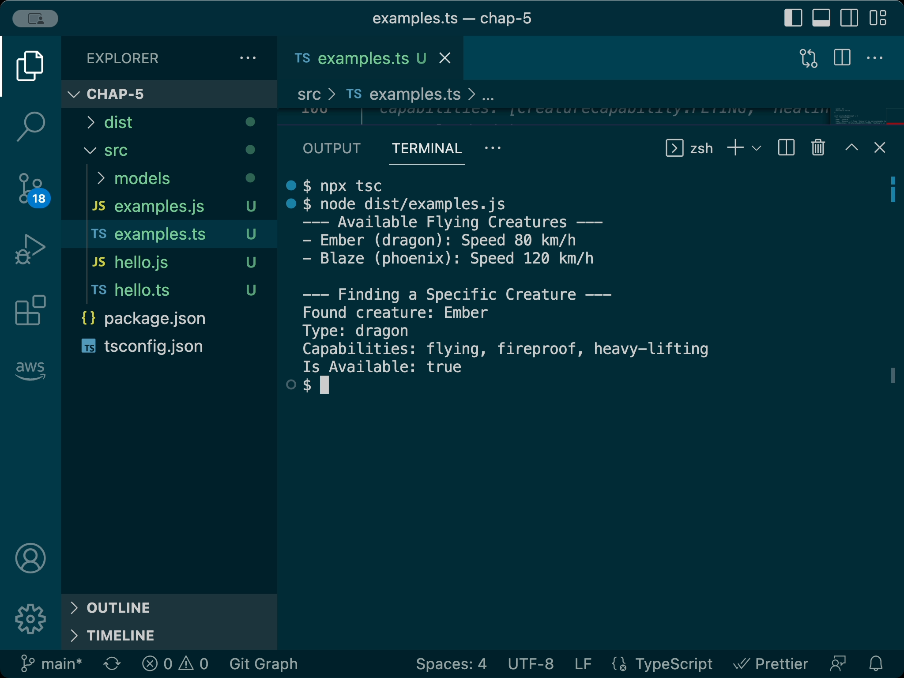
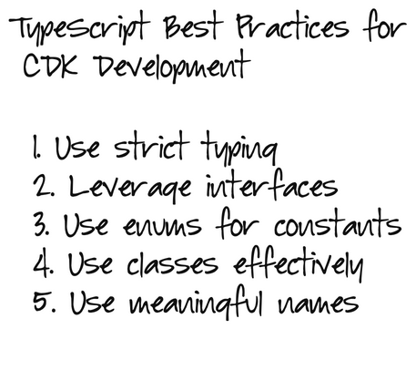

Chapter 5
TypeScript Fundamentals
Maya had booked a small conference room for their fifth session. When Ethan arrived, he found her setting up her laptop and connecting it to the large display. The room's whiteboard was already covered with TypeScript syntax examples.
"Today's session is going to be a bit different," Maya said as Ethan took a seat. "Before we dive deeper into CDK, we need to get comfortable with TypeScript. It's the language we'll use to define our infrastructure."
Ethan opened his laptop. "I'm familiar with JavaScript, but I've never used TypeScript before. Is it very different?"
"TypeScript is a superset of JavaScript," Maya explained, pointing to a simple diagram on the whiteboard. "That means all valid JavaScript code is also valid TypeScript code. However, TypeScript adds features on top of JavaScript, most importantly static typing, along with other enhancements like interfaces, enums, and better support for object-oriented programming. These features are used during development to improve code quality and catch errors early, but when compiled, they are transformed into standard JavaScript, ensuring compatibility with any JavaScript runtime."

Diagram showing TypeScript as a superset of JavaScript, and compiles to JavaScript
"So we're learning TypeScript specifically to use with CDK?" Ethan asked.
"Exactly. AWS CDK was designed with TypeScript as its primary language, though it supports others too. TypeScript's static typing helps us catch errors during development and compilation, before we deploy our infrastructure, which can save a lot of time and prevent mistakes. It also enables better tooling, like autocompletion and refactoring in our code editor," Maya explained. "Furthermore, CDK uses TypeScript's object-oriented features (like classes and interfaces) extensively to create its component model for infrastructure. Understanding these concepts is essential for working effectively with CDK constructs in the next chapter."
Setting Up a TypeScript Project
"Let's start by setting up a basic TypeScript project," Maya suggested. "We won't build infrastructure yet, but we'll use this project to practice TypeScript concepts by modeling some core parts of our MagicMail domain."
"Think of these models as digital blueprints for the key entities in our system," she continued. "Just like an architect creates models before building a house, we'll create code models for things like magical creatures, packages, and deliveries. This helps clarify our understanding of the business requirements and gives us practical examples for learning TypeScript."
She opened a terminal window. "First, let's create a new directory for this exercise and initialize a Node.js project using npm (Node Package Manager)."
xxxxxxxxxx
Screenshot showing the creation of package.json
"The npm init -y command creates a basic package.json file. This file tracks project details, dependencies (libraries our code uses), and scripts (commands to build or run our project)," Maya explained. "Now, let's install TypeScript itself as a development dependency."
xxxxxxxxxx"The --save-dev (or -D) flag tells npm that TypeScript is only needed for development, not for running the final compiled JavaScript code. Next, we'll initialize the TypeScript configuration:"
xxxxxxxxxx
Screenshot showing the creation of tsconfig.json
"This command creates a tsconfig.json file, which contains settings that control how the TypeScript compiler (tsc) behaves," Maya said, opening the newly created file. "Let's modify a few key settings for our project."
Maya edited the tsconfig.json file:
xxxxxxxxxx"Let me explain some key settings," Maya said:
"target": "ES2018": Specifies the JavaScript version our TypeScript code will be compiled down to. ES2018 is well-supported in modern Node.js environments, which CDK uses."module": "commonjs": Defines the module system to use for the compiled JavaScript (Node.js uses CommonJS)."strict": true: Enables a suite of strict type-checking options. This is highly recommended as it helps catch many potential errors during development."esModuleInterop": true: Improves compatibility between different types of JavaScript modules."outDir": "./dist": Tells the compiler to put the output JavaScript files into a directory nameddist."declaration": true: Tells the compiler to also generate corresponding.d.tsfiles, which describe the types in our compiled code (useful for libraries)."include": ["src/**/*"]: Specifies that TypeScript should compile all files within thesrcdirectory."exclude": [...]: Specifies files or directories to ignore during compilation.
"Now, let's create our source directory structure. We'll organize our code into logical folders, a practice we'll also follow in our CDK projects."
xxxxxxxxxx"Perfect. Now we're ready to write our first TypeScript code."
First TypeScript Program: Hello World
"Let's start with the simplest possible TypeScript program to see the core concept in action," Maya suggested, creating a new file called src/hello.ts.
xxxxxxxxxx"This simple program highlights the key feature of TypeScript: type annotations," Maya explained. "Notice : string after the name parameter and after the function definition? These annotations explicitly tell TypeScript (and other developers, and our editor) what type of data is expected or returned."
"How does this actually run?" Ethan asked.
"Good question. TypeScript code doesn't run directly in Node.js or browsers. It needs to be compiled into standard JavaScript first. Let's do that."
xxxxxxxxxx
Screenshot showing the compilation command and the 'Hello, Magical World!' output from the node command
"The first command, npx tsc src/hello.ts, invokes the TypeScript compiler (tsc) on our file. By default, it creates a corresponding .js file (src/hello.js) in the same directory (though our tsconfig.json would put it in dist if we compiled the whole project). The second command, node src/hello.js, runs the generated JavaScript file."
"Let's look at the generated hello.js:"
xxxxxxxxxx"Notice how all the type annotations (: string) are gone?" Maya pointed out. "TypeScript's type system exists only during development and compilation. It helps us write safer, more maintainable code, but the final output is plain JavaScript that can run anywhere."
"Now, try uncommenting the last line in src/hello.ts (console.log(greet(42));) and run the compilation command npx tsc src/hello.ts again."

Screenshot showing the TypeScript error: "Argument of type 'number' is not assignable to parameter of type 'string'.
"See that error?" Maya asked. "TypeScript analyzed the code and detected that we're trying to pass a number (42) to a function that explicitly expects a string. It stops the compilation and tells us about the mistake. This immediate feedback is incredibly valuable, especially in large projects like our CDK infrastructure where such type mismatches could lead to deployment failures or runtime errors."
"This type-checking capability is why we use TypeScript with CDK. CDK provides many predefined types for AWS resources and their configurations. TypeScript helps ensure we use them correctly, catching errors early in the development cycle."
TypeScript Basics: Types, Interfaces, and Enums
"Now that we understand the basic workflow, let's model our MagicMail domain using more TypeScript features," Maya said. "We'll start by defining the structure of our data using interfaces and enums."
"This approach focuses on defining the 'shape' of our data first," Maya explained. "We'll use enum for fixed sets of values and interface to describe the structure of our objects like creatures and packages."
Maya created a new file at src/models/creature.ts. (If you didn't create subdirectories earlier, create src/model now).
"In MagicMail, magical creatures deliver packages. Let's create a TypeScript model for them."
xxxxxxxxxx"Let's break this down," Maya said, drawing on the whiteboard.
Diagram illustrating how enums define constants, interfaces define object shapes, and the TS compiler checks objects against interfaces
"First, we defined two enum types: CreatureType and CreatureCapability. An enum (enumeration) in TypeScript is a way to define a set of named constants. It's perfect for representing fixed sets of values, like the types of creatures we support or their possible abilities. Using enums (CreatureType.DRAGON) instead of raw strings ('dragon') provides several benefits:
Type Safety: Prevents typos (e.g.,
'grifin'instead of'griffin'). TypeScript will error if you try to assign an invalid value.Readability: Makes the code clearer about the intended values.
Refactoring: Easier to rename or change values later.
Autocompletion: Code editors can suggest valid enum members.
xxxxxxxxxx"Next, we defined the Creature interface. An interface in TypeScript acts like a contract or a blueprint for objects. It describes the expected 'shape' of an object—what properties it must have, what properties are optional, and what the types of those properties should be."
xxxxxxxxxx"Key points about the interface:
It defines the structure, but doesn't create objects itself.
Properties are required by default. Adding a
?after the property name (likelastLocationUpdate?) makes it optional.We can use primitive types (
string,number,boolean), complex types (Date, other interfaces/objects), enum types (CreatureType), and arrays (CreatureCapability[]).We used the
exportkeyword. This makes the enums and interface available for use in other files via theimportstatement, enabling modular code."
Ethan studied the code. "So the interface tells TypeScript what a valid Creature object should look like, and the enums define the allowed values for certain properties?"
"Exactly," Maya replied. "And TypeScript checks our code against these definitions:
During Development: Your code editor (like VS Code) uses this information to provide autocompletion and highlight errors as you type.
During Compilation: The
tsccompiler rigorously verifies that all objects we create or use match their declared types or interfaces.
This helps catch errors before the code even runs."
"When we work with CDK, we'll use interfaces provided by the CDK library (e.g., s3.BucketProps) to configure AWS resources. TypeScript will ensure we provide the correct properties with the correct types."
"Now let's model packages," Maya continued, creating src/models/package.ts.
xxxxxxxxxx"And finally, deliveries," Maya said, creating src/models/delivery.ts.
xxxxxxxxxx"This file introduces a few more concepts," Maya explained. "First, the import statement allows us to use types (like Creature and Package) defined in other files. This is fundamental to building modular applications."
"Second, we're showing two ways to model related data. The Delivery interface uses IDs (packageId, creatureId) to reference other entities. The DeliveryDetails interface, however, embeds the full Package and Creature objects, which might be useful when displaying complete delivery information. This pattern of referencing by ID versus embedding full objects is common in system design, and we'll see similar choices when defining relationships between AWS resources in CDK."
Working with Types: Creating Objects and Functions
"Now that we've defined our models, let's write some code that uses them," Maya said, creating src/examples.ts.
xxxxxxxxxx"Now, let's compile and run this. But first, a learning moment about TypeScript compilation," Maya said deliberately. "What happens if we try to compile only this single file, ignoring our project's tsconfig.json?"
xxxxxxxxxx
Screenshot showing potential errors like "Cannot find name 'find'." or issues with array methods if default libs aren't included
"You might see errors here," Maya explained. "Depending on the exact defaults TypeScript uses when run without a config file, it might not recognize things like console.log or modern array methods like .find() or .includes(). This demonstrates why relying on the project's tsconfig.json is important – it ensures the compiler knows which JavaScript features and libraries (like ES2018, DOM) are available in our target environment."
"The correct way to compile our code is to compile the entire project based on the tsconfig.json settings. This ensures all files are checked consistently and use the specified language features and libraries."
xxxxxxxxxx"This command reads tsconfig.json, finds all files specified in the include section (our src directory), checks them, and outputs the compiled JavaScript into the outDir (./dist). Now, let's run the compiled example code:"
xxxxxxxxxx
Screenshot showing the correct output: list of flying creatures and details of the found dragon
"This workflow – compiling the whole project with npx tsc and running the output from dist – is exactly how we'll work with our CDK applications. The CDK toolkit actually handles the tsc compilation step automatically when you run commands like cdk synth or cdk deploy, but understanding the underlying process is crucial."
"Let's review the key TypeScript concepts in examples.ts," Maya pointed out:
Typed Arrays:
const creatures: Creature[]explicitly declares an array that can only hold objects matching theCreatureinterface.Typed Functions: Functions like
findCreatureByIdhave type annotations for parameters (id: string) and return values (Creature | undefined). The|creates a union type, meaning the function can return either aCreatureorundefined.Type Inference: Inside the
.forEachloop forflyingCreatures, TypeScript infers that thecreaturevariable is of typeCreaturebecauseflyingCreaturesis known to beCreature[]. This enables autocompletion and type checking within the loop.Type Guards: The
if (foundCreature)check acts as a type guard. Inside theifblock, TypeScript knowsfoundCreaturecannot beundefinedand treats it as typeCreature, allowing safe access to its properties.Compile-Time Errors: The commented-out
badCreatureAttemptandanotherBadAttemptexamples show how TypeScript catches various errors: missing required properties, assigning incorrect types (string instead of enum), using invalid enum values, or adding properties not defined in the interface.
"When we work with CDK, we'll constantly be creating objects that need to conform to specific interfaces (like s3.BucketProps) and calling functions or methods with specific type requirements. TypeScript will be our safety net."
Introduction to Classes
"What we've done so far—defining data structures with interfaces/enums and creating separate functions to operate on that data—is often associated with a more functional programming style," Maya explained. "It keeps data and behavior separate."
"Now let's look at an object-oriented approach using classes. A class defines a blueprint for creating objects that group together related data (called properties) and functions that operate on that data (called methods). This approach is widely used in modern programming because it helps organize code into modular, reusable building blocks — a concept you'll see in action very soon when we start working with CDK."
Maya created a new file at src/services/creature-service.ts (or src/creature-service.ts).
xxxxxxxxxx"A class in TypeScript is a blueprint for creating objects," Maya explained. "It combines:
Properties (Data/State): Variables that hold the object's data (e.g.,
private creatures: Creature[]). Theprivatekeyword restricts access to this property from outside the class, promoting encapsulation.Constructor (Initialization): A special method (
constructor) that runs when you create a new object (instance) from the class using thenewkeyword. It initializes the object's properties.Methods (Behavior): Functions defined within the class that operate on the object's properties (e.g.,
getAllCreatures(),addCreature()). Methods use thethiskeyword to access the instance's properties and other methods."
"To use this class, we'd create an instance of it in another file:"
xxxxxxxxxx"This class-based approach is fundamental to CDK," Maya emphasized. "CDK provides base classes (like cdk.Stack, s3.Bucket, lambda.Function). We create our infrastructure by instantiating these classes (new s3.Bucket(...)) or by creating our own classes that extend these base classes to add custom logic or group resources."
"Let's quickly create a similar service class for packages," Maya said, creating src/services/package-service.ts.
xxxxxxxxxxInheritance: Extending Classes
"Now let's explore inheritance, another crucial object-oriented concept heavily used in CDK," Maya said. "Inheritance allows a class (the child or subclass) to inherit properties and methods from another class (the parent or superclass). The child class can then reuse, extend, or modify the parent's behavior."
"When we work with CDK, we'll frequently extend existing CDK constructs (which are classes) to create our own specialized infrastructure components."
Maya created src/services/delivery-service.ts.
xxxxxxxxxx"Key inheritance concepts demonstrated here:" Maya explained:
extends: ThePriorityDeliveryService extends DeliveryServiceline establishes the inheritance relationship.PriorityDeliveryServiceis the child,DeliveryServiceis the parent.
protected: Properties likedeliveries,creatureService,packageServicein the parent are markedprotected. This allows the child class (PriorityDeliveryService) to access them directly (e.g.,this.deliveries.push(...)), but they remain inaccessible from outside the class hierarchy.
override: When a child class provides its own implementation of a method that already exists in the parent (likecreateDeliveryRequest), using theoverridekeyword makes the intention clear and helps TypeScript verify that the method signature matches the parent's method.
super: Inside the child class method,super.createDeliveryRequest(packageId)can be used to explicitly call the parent class's version of the method. This is useful for extending behavior rather than completely replacing it (though we replaced it here, the fallback shows howsupercould be used).
"This extends pattern is exactly how we'll work with CDK," Maya reiterated. "We'll create our own classes like MagicMailApiStack extends cdk.Stack or MagicMailLambdaFunction extends lambda.Function to build upon CDK's base constructs and add our application-specific logic and configuration."
Putting It All Together: A Simple App Script
"Let's create a simple script to see these services interact," Maya said, creating src/app.ts.
xxxxxxxxxx"To make running this easier, let's add scripts to our package.json for building and starting the app," Maya suggested.
xxxxxxxxxx"These commands add build and start scripts to your package.json.
npm run build: Runstsc, compiling the entire project based ontsconfig.jsoninto thedistdirectory.
npm run start: Runs the compiledapp.jsfile from thedistdirectory using Node.js."
"Now we can compile and run our application simulation:"
xxxxxxxxxx
Screenshot showing the output of the npm start command, simulating the delivery requests and availability changes
"This demonstrates how classes and objects interact. We created instances of our services and called their methods to simulate the delivery process. This object-oriented structure, with classes, inheritance, and methods, is precisely how we will structure our CDK code."
To better understand how all the parts of our TypeScript modeling exercise fit together, here's a visual diagram showing the relationships in our code. It illustrates how classes include interfaces to define the shape of their data, how one class extends another through inheritance, and how enums are used within interfaces to constrain values to a known set. It also shows how our main App class calls the various service classes to simulate the system behavior. This kind of structural clarity will carry over into our CDK work, where similar class-based patterns will help us model real cloud infrastructure in code.
Diagram of Class, Interface, and Enum Relationships in TypeScript: A visual overview of how core types and services interact in our simulated delivery system.
TypeScript Best Practices for CDK Development
Maya brought up a slide summarizing key takeaways for using TypeScript with CDK.

TypeScript best practices for CDK
"Based on what we've learned, let's highlight some TypeScript best practices crucial for CDK development:"
Embrace Strict Typing: Always enable
"strict": trueintsconfig.json. Avoid usinganyunless absolutely necessary. Catching type errors at compile time is much better than during deployment.Use Interfaces for Props: Define clear
interfacetypes for the configuration properties (props) passed to your CDK constructs (especially custom ones). This makes usage clear and type-safe.Leverage Enums: Use
enumfor predefined sets of values (like Lambda runtimes, S3 storage classes, environment names) instead of raw strings or numbers.Master Classes and Inheritance: CDK is class-based. Understand how to instantiate classes (
new), extend them (extends), use constructors, and manage visibility (public,private,protected).Use Meaningful Names: Choose clear, descriptive names for variables, functions, classes, interfaces, and enums. CDK code defines real infrastructure, so clarity is paramount.
Modularity: Use
importandexportto organize your code into logical files and modules.Readonly Properties: Where appropriate, use the
readonlymodifier for properties in interfaces or classes that should not be changed after initialization.
Applying TypeScript to CDK Development
"How do these TypeScript concepts map directly to CDK?" Ethan asked.
Maya sketched a quick comparison on the whiteboard.
Diagram mapping TS concepts to CDK usage
"Here's the direct mapping:
Classes: The core building blocks. We'll create instances of CDK classes (
new s3.Bucket(...)) and define our own stacks and custom constructs by extending CDK base classes (class MyStack extends cdk.Stack).Interfaces: Used extensively to define the structure of the
props(properties/configuration) object passed to constructs. For example,s3.Buckettakess3.BucketPropsas its third argument. We'll define interfaces for our own custom construct props.Enums: Used by CDK for predefined options, like
lambda.Runtime.NODEJS_18_X,s3.StorageClass.INFREQUENT_ACCESS, orec2.InstanceClass.T3. Using enums prevents typos and ensures valid values.
Modules (import/export):Used to import CDK library modules (import * as s3 from 'aws-cdk-lib/aws-s3';) and to structure our own CDK code across multiple files (export class MyStack ...).
Basic Types (string, number, boolean, arrays):Used for simple configuration values within props objects.
"The models we created today (Creature, Package) won't be directly used in our CDK infrastructure code, but the TypeScript patterns we used to create them—interfaces, enums, classes, inheritance—are exactly what we'll use when defining our infrastructure with CDK."
Wrapping Up
Maya closed her laptop. "That covers the TypeScript fundamentals most relevant to CDK development. We've explored static typing, interfaces, enums, classes, inheritance, and how they help create structured, maintainable, and safer code."
"Any final questions on TypeScript for now?"
Ethan shook his head. "I think I've got the basics. Interfaces define the shape, enums handle fixed values, and classes bundle data and behavior, which seems key for CDK. I'm ready to see how this applies to actual infrastructure."
"Excellent," Maya smiled. "You're well-prepared. In our next session, we'll finally dive into CDK itself. We'll initialize our first CDK project, understand its structure, and use the TypeScript concepts we learned today to define our S3 asset bucket using CDK constructs."
Ethan's Homework
Refactor the
Creatureinterface to makenameoptional and add a requiredspeciesproperty using theCreatureTypeenum.Create a simple
WorldServiceclass. Give it aprivatearray property to storeCreatureobjects. Add public methods:addCreature(creature: Creature)andfindCreaturesByType(type: CreatureType): Creature[].Create a
FlyingCreatureServiceclass thatextends WorldService. Override theaddCreaturemethod so that it only adds creatures whosecapabilitiesarray includesCreatureCapability.FLYING. (Hint: you might need to make thecreaturesarrayprotectedin the parent class).
Key Takeaways
TypeScript adds static typing to JavaScript, catching errors during compilation, which is crucial for reliable infrastructure code.
Interfaces define object structures (
propsin CDK).Enums provide type-safe constants (resource options in CDK).
Classes bundle data and behavior (Constructs/Stacks in CDK are classes).
Inheritance (extends)allows reusing and specializing classes (fundamental for custom CDK constructs).Understanding these concepts is essential for writing effective AWS CDK code in TypeScript.
Looking Ahead
In the next chapter, Maya will introduce Ethan to CDK fundamentals. They will set up their first CDK project, explore its structure, and use TypeScript to define and deploy their first piece of AWS infrastructure – the MagicMail asset bucket – using CDK constructs.
TypeScript Concepts Introduced
Static typing, type annotations (
: type)Compilation (
tsc) vs. Runtime (JavaScript)
tsconfig.jsonconfiguration fileBasic types (
string,number,boolean,Date, arrays[])
interface(defining object shapes, optional properties?)
enum(defining named constants)Union types (
|)Type guards (using
ifchecks to narrow types)Modules (
import,export)
class(properties, constructor, methods,thiskeyword)Access modifiers (
public,private,protected), EncapsulationInheritance (
extends,super,override)Instantiation (
newkeyword)